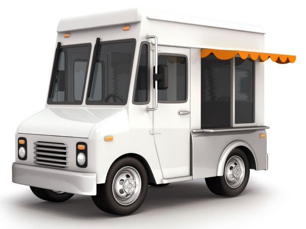

The Bean Truck
Beans are good food!
The bean truck serves affordable and tasty meals based on that humble but delicious ingredient: legumes.

Our Mission
Across the globe, humble legumes of every color and size: from black turtle beans to white cannellinis, from tiny red lentils to giant cranberry beans, form the basis of classic, nourishing food enjoyed by rich and poor alike. The Bean Truck strives to bring these dishes to life for Philadelphia!
We're based on a simple philosophy: that healthy, tasty food can be affordable and fun! We draw on cuisines from around the world to make protein-rich, hearty soups, stews, sandwiches and more. Our beans and vegetables are all organic, and locally sourced whereever possible. We get our eggs from the Lancaster Free Range Chicken Coop. Pork is from Ithaca, New York's Piggery.
The next time you need a real meal, made from fresh and local ingredients, look for the Bean Truck on a street near you!
Events
Upcoming Events
Look for the bean truck at the following upcoming events:
World Meeting of Families
Manayunk Food Truck Festival
Gurrellia Food Truck Wednesday at Drexel
Fairmount Park Truck Meet
Conshohocken Brewery Food Truck Night
Spooky Food Truck Halloween